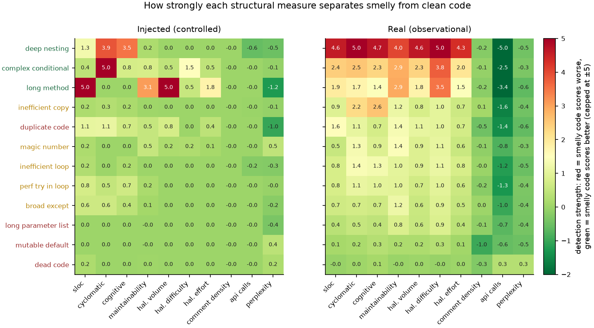
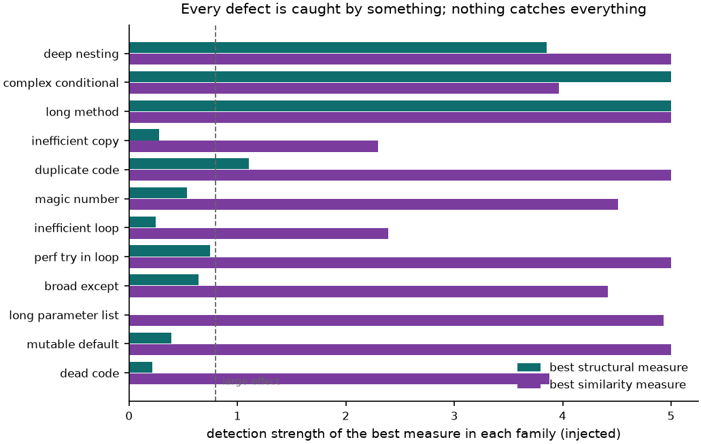
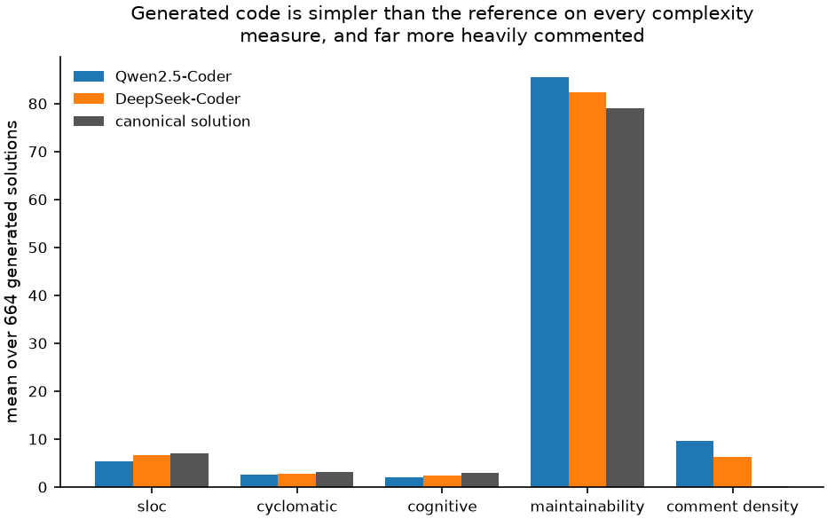
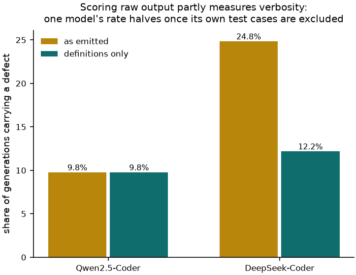
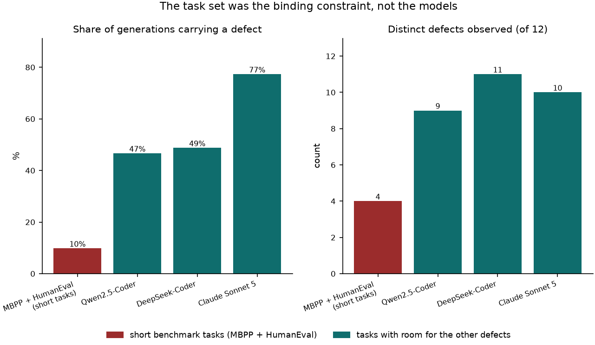
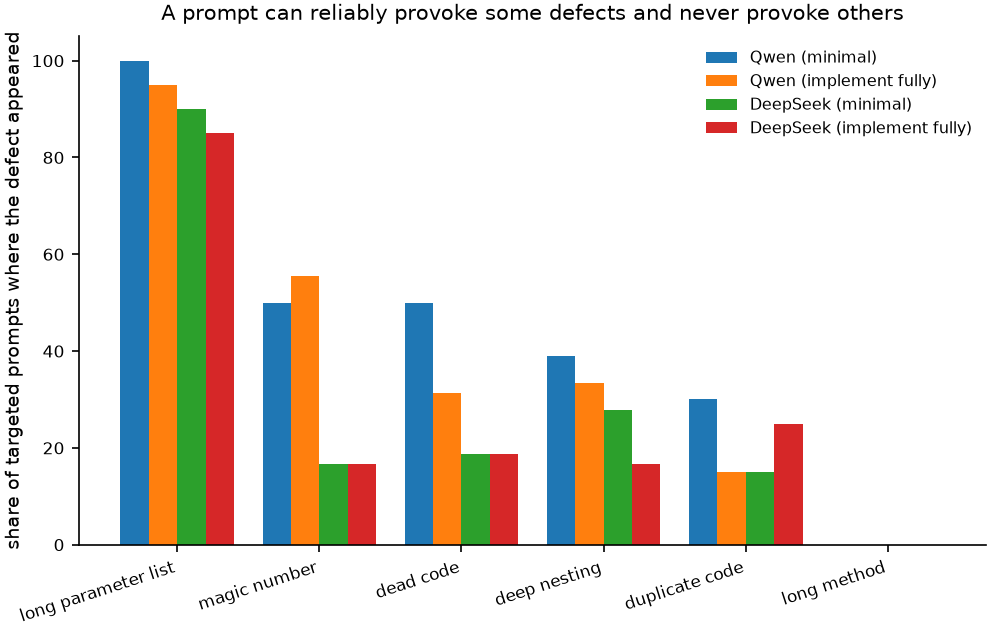
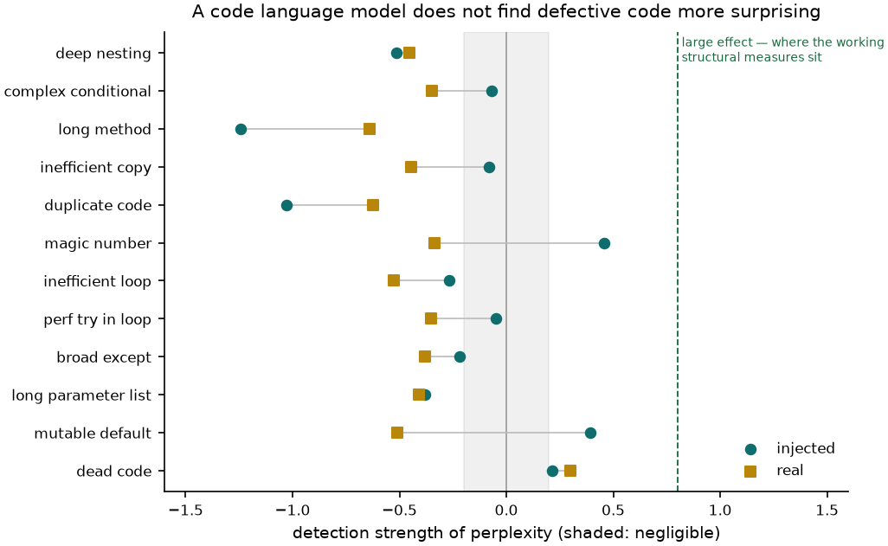
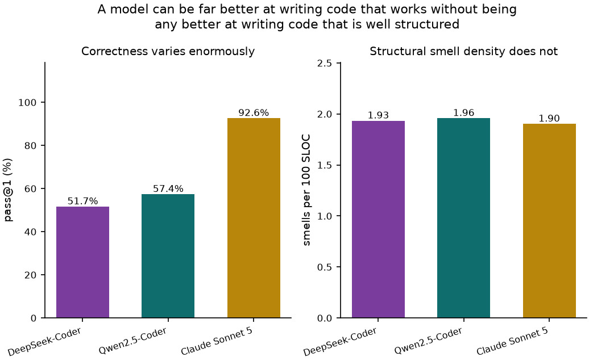

The figures and tables behind the write-up, each with what it shows and how
to read it. Everything here is generated from the result files by
analysis/make_analysis.py, so no number on this page was typed in by hand.
Every structural measure against every defect, scored twice. Left is the controlled experiment: one defect introduced into otherwise unchanged code, so any movement is caused by the defect. Right is real human-written code labelled by the same detectors, where the two groups differ in many ways at once.

Read a row across. Where both panels are hot, the measure genuinely detects the defect. Where only the right panel is hot, it is responding to something the defect travels with — usually size. The right panel is visibly hotter overall, and that gap is the paper's central claim: an observational study alone would credit these measures with far more than they can actually do. Defect names are coloured by the verdict they end up with.
Vector version for the paper: fig1_detection_heatmap.pdf
For each defect, the strongest measure available in each family, on the controlled data. The bars are maxima on purpose: if the best measure in a family cannot see a defect, no measure in that family can.

Eight of the twelve defects are beyond every structural measure at the conventional large-effect threshold. That matters because the structural family is the only one available on deployed code — the similarity family reaches all twelve, but only where a known-good reference exists to compare against, which a benchmark has by construction and real code never does.
Vector version for the paper: fig4_family_coverage.pdf
Structural measures averaged over 664 generated solutions, next to the canonical solutions for the same tasks.

Generated code is simpler than the reference on every complexity measure and more heavily commented. This holds for all three models, including the frontier one, so it is not a quirk of small models. It is also the opposite of what a reader might assume — the worry that models produce sprawling over-complicated code is not what the measurements show on tasks of this size.
Vector version for the paper: fig5_model_structure.pdf
Defect rate per model, computed two ways: over everything the model emitted, and over just the function definitions.

DeepSeek appears two and a half times more defective than the others until its own
appended test cases are excluded, at which point the gap nearly closes. The literals
inside assert f(10) == 40 are counted as magic numbers by any detector.
With three models the shape of the artefact is clearer: the correction moves DeepSeek
alone and leaves Qwen and Claude exactly where they were, so this is a property of
one model's output habits rather than a deflator that applies to everyone.
Vector version for the paper: fig6_verbosity_confound.pdf
Defect rate and number of distinct defects observed, on the short-function benchmark against the smell-inducing prompt set.

On MBPP and HumanEval only four or five of the twelve defects ever appeared, which looked like evidence that models write structurally clean code. Given tasks with room for the other defects, the rate roughly quadruples and twice as many defects show up. The earlier result was a property of the benchmark, not of the models.
Vector version for the paper: fig7_task_set.pdf
For prompts written to provoke a specific defect, how often that defect actually appeared.

The spread is the finding. Asking for many parameters reliably produces too many parameters. Asking for a function that does seven things produces, in every run, a decomposition into five or six small functions instead — never a long method. Prompt wording is a strong lever for some structural properties and no lever at all for others.
Vector version for the paper: fig8_induction_rate.pdf
Perplexity under a code language model, on both sources, for all twelve defects. The hypothesis being tested is that structurally poor code is unusual code, and so should surprise a model trained on a large corpus.

It does not. No defect clears even the small-effect band in the defective direction, and most values point the wrong way — defective code is slightly more predictable than clean code. The mechanism is mundane: the largest negative values belong to long methods and duplicated code, whose padding and repetition are the easiest text there is to predict. Fluency-based scores are routinely proposed as quality proxies; this is a clean negative result for that idea.
Vector version for the paper: fig9_perplexity.pdf
pass@1 next to defect density per hundred lines, for the three models on the same 664 tasks.

Correctness spans forty-one points: DeepSeek 51.7%, Qwen 57.4%, Claude 92.6%. Defect density spans six hundredths: 1.93, 1.96, 1.90. A model can be far better at writing code that works without being any better at writing code that is well structured. This only became visible once a frontier model joined the comparison, and it is the strongest reason not to read structural metrics as a measure of model quality.
Vector version for the paper: fig10_capability_vs_structure.pdf
The 95% intervals are what make the verdict a claim rather than an impression. For the co-occurrence defects the controlled interval contains zero while the observational interval excludes it — the measure demonstrably cannot see the defect, yet separates the groups.
| defect | strongest measure | injected | 95% CI | real | 95% CI | verdict |
|---|---|---|---|---|---|---|
deep_nesting | cyclomatic | 3.85 | [3.39, 4.32] | 5.00 | at cap | detects |
complex_conditional | halstead difficulty | 1.50 | [1.18, 1.81] | 3.77 | [3.56, 3.98] | detects |
long_method | halstead difficulty | 0.54 | [0.26, 0.83] | 3.51 | [3.34, 3.68] | detects |
inefficient_copy | cognitive | 0.18 | [-0.10, 0.46] | 2.58 | [2.34, 2.82] | co-occurs |
duplicate_code | sloc | 1.06 | [0.77, 1.36] | 1.55 | [1.38, 1.72] | blind |
magic_number | maintainability | 0.54 | [0.25, 0.82] | 1.43 | [1.28, 1.58] | co-occurs |
inefficient_loop | cyclomatic | 0.00 | [-0.28, 0.28] | 1.37 | [1.23, 1.51] | co-occurs |
perf_try_in_loop | api calls | -0.00 | [-0.28, 0.28] | -1.29 | [-1.43, -1.16] | co-occurs |
broad_except | maintainability | 0.10 | [-0.18, 0.38] | 1.19 | [1.09, 1.29] | co-occurs |
long_parameter_list | halstead difficulty | 0.00 | [-0.28, 0.28] | 0.86 | [0.77, 0.95] | blind |
mutable_default | comment density | -0.00 | [-0.28, 0.28] | -0.99 | [-1.10, -0.87] | blind |
dead_code | api calls | -0.00 | [-0.28, 0.28] | 0.31 | [0.19, 0.43] | blind |
Detection strength is the standardised difference between the defective and clean groups: the difference in means divided by the pooled standard deviation, oriented so positive always means the defective code scored worse, and capped at five.
The interval uses the large-sample variance for an independent-groups standardised
difference (Hedges & Olkin): the first term is sampling error in the means, the second
the error in the pooled standard deviation. Values sitting at the cap are reported without
an interval — the cap is not an estimate, so an interval around it would imply a precision
that is not there. Of the 204 measure-by-defect combinations, 23 are at the cap and are
flagged in tables/detection_full.csv.
Tables for the paper: detection.tex, benchmark.tex, detection_full.csv (every combination), detection.csv.